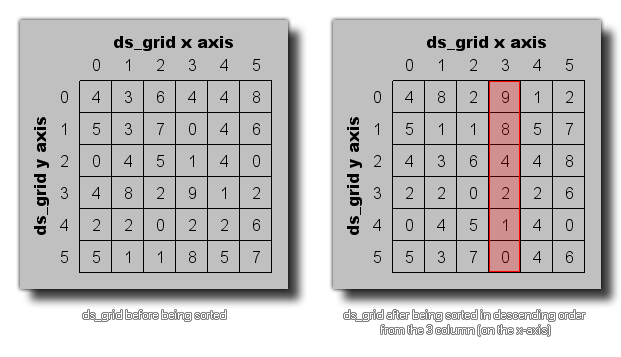

ds_grid_sort(index, column, ascending);
| Argument | Description |
|---|---|
| index | The index of the grid to sort. |
| column | The column to use for sorting the rows |
| ascending | Whether to sort lowest to highest (true), or highest to lowest (false). |
Returns: N/A
This function can be used to sort a ds_grid based on the values
from a given column (much as you would sort files by date, size
etc... in the Windows Explorer). The following image shows an
example: 
ds_grid_sort(grid, 3, false);
This would take all the values in the ds_grid indexed in the variable "grid" and sort them according to the values found in the 3rd column of the grid (as shown in the above image).